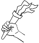

67
Je marche jusqu'à la caverne et j'entre. Il fait très sombre mais au bout d'un moment mes yeux s'habituent à la pénombre. Et je trouve une torche sur le sol. Je l'allume et continue mon exploration. Il y a un petit passage au fond de la grotte. Ça semble être le seul chemin possible et j'ai le sentiment que ma mission m'amène de l'autre côté de ces collines. Je n'ai pas le choix! Je dois entrer dans ce passage!
|